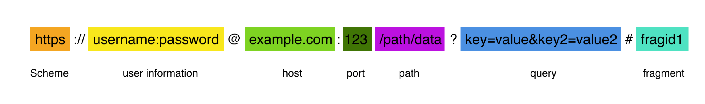
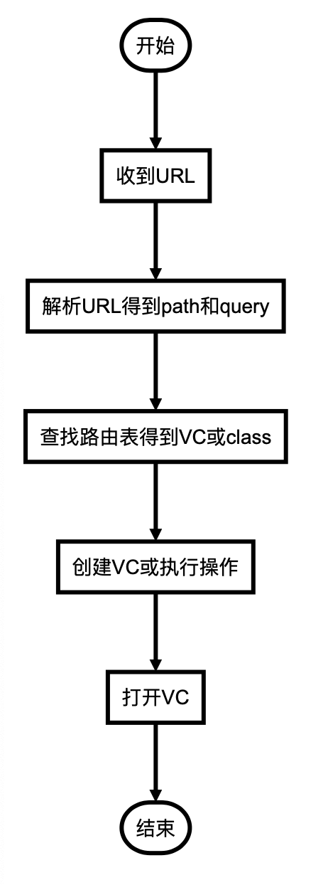
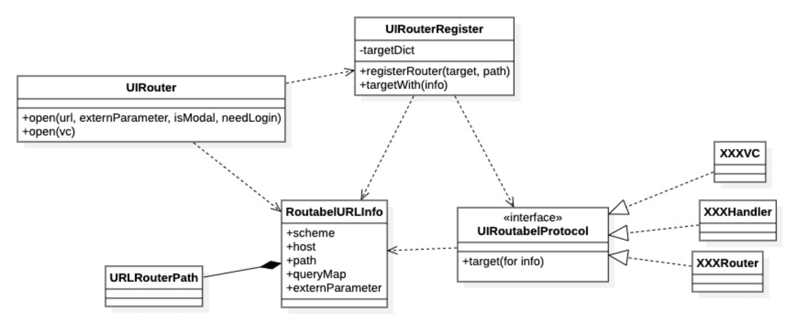
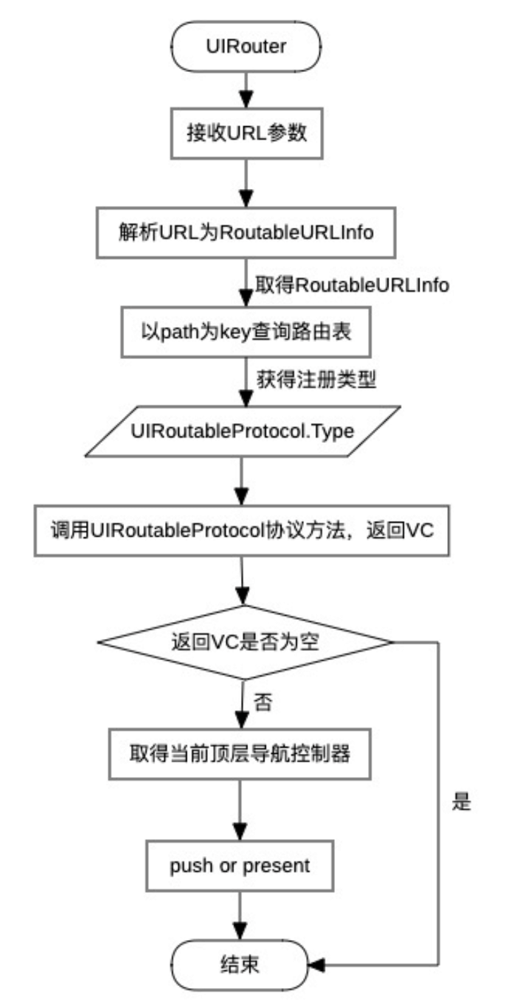

Router设计文档
需求背景
最初，建立路由功能的需求是由于这样几个问题而产生的：
- 接入远程推送功能后，需要满足通过一个URL来打开端内页面的功能。
- 端外H5或其他APP的运营活动，存在唤起一刻，并打开对应落地页的需求。
- 一刻相册在完成了组件化拆分后，逐渐产生了UI层的依赖问题。两个组件仅仅是在UI层需要互相跳转，直接引用就产生了循环依赖的问题。
所以为了满足业务上的需求，并且降低组件间耦合，需要在项目中实现一套路由功能。
此时又面临新的问题，一刻的UI层完全由Swift代码完成，而网盘的路由组件是OC实现，而且当时市面上大部分路由功能都是通过OC实现，使用了大量runtime特性，这些特性不够Swift。所以需要自己实现一套Swift特性的路由功能。
名词解释
统一资源标识符（英语：Uniform Resource Identifier，或URI)是一个用于标识某一互联网资源名称的字符串。 该种标识允许用户对网络中（一般指万维网）的资源通过特定的协议进行交互操作。URI的最常见的形式是统一资源定位符（URL）。
设计目标
- 可以通过端外scheme URL或Universal Link调起端内落地页
- 可以在端内不耦合其他业务组件的情况下，打开指定页面，包括push和present两种方式
- 可以在端内不耦合其他业务的情况下，指定某业务模块完成某特定动作，例如签到，开启备份等功能
- 依靠纯Swift实现整个功能，不依赖runtime动态特性
设计思路
基础思想
在整个前端，其实视图都被看成是资源的一种表现。对于资源的访问，最通用的方式就是URI。
iOS系统在处理系统调起时，同样是使用URI格的方式来访问。一种是URL Scheme，一种是Universal Links。
都是通过一个URI来传递信息。
当系统对APP发起一个调起的请求时，会在Appdelegate中调用
func application(_ app: UIApplication, open url: URL, options: [UIApplication.OpenURLOptionsKey : Any] = [:]) -> Bool
URL Scheme的URL格式为youa://youa.com/path?para=xxx ，Universal Links则是https://photo.baidu.com/path?para-xxx
所以router设计应当顺应这个流程，核心方向为URL的解析处理。
这是一个URL的格式：

对于一刻的场景，host一定是相对固定的，path代表了对应的功能或页面，query中用来传参。
路由设计
path对应了功能或页面，所以需要维护一个路由表，key就是path。
OC的传统实现是通过runtime直接自动生成路由表，这在swift中无法实现，所以只能采用手动注册路由表的方式，但是swift的优势是，可以将路由表的path类型化，不比使用字符串硬编码，减少了维护成本。
所以核心的路由表设计是
{
path1 : objc1， path2 : objc2, …
}
path是唯一的，但是value不唯一，多个path可以注册为同一个objc，这样就可以支持子路由功能，当path1，path2都注册了objc1为value，则objc1就可以处理两个不同的path。
同时map结构的路由表性能较好，日后不太可能出现性能问题。
在router中，应当完成如下流程：

模块设计
模块设计图
UIRouter接口类，处理解析和跳转功能UIRouterRegister路由表维护类，负责注册路由表功能RoutableURLInfoURL的解析产物，为Router中实际的数据格式URLRouterPath将path类型化，解决字符串硬编码问题

流程图

本设计优劣势
优势
- 纯Swift实现，较好的支持了字面量的类型化和协议化实现
- 省去了每个routable控制器的遍历构造器方法，无需针对router做单独的初始化方法
- 分散式注册路由表，不会出现一个path的修改造成全量编译的问题
- 模块内跳转可以去字符串化
- 多端统一，支持H5跳转，端外跳端内等一切URI形式的页面跳转
- 支持子路由转发
劣势
- 路由表注册位置分散，需要单独的文档维护路由表定义
- 无法动态注册路由表
- 无依赖跨模块跳转依然需要字符串硬编码
- 暂时无返回值
使用方式及注意事项
对于需要支持跳转的控制器，需要在合适的时间注册路由表，目前有两种常用方式：
- 在对应模块的
Assembly中assemble(container: Container)方法内通过子router类注册； - 在主工程
YouaUIRoutableProtocol文件中，在AppDelegate的 extension中registerUIRouter方法内注册
推荐使用第一种，在第一种不适用的情况下再使用第二种
例如：
1 | public struct YouaRecycleAssembly: Assembly { |
需要注意
- 虽然path被类型化，无法引用到path声明的地方，依然可以通过string来进行跳转
- 能引用到path的地方，尽量不要使用String来跳转，可以使用下面的方式
1 | let urlString = URLRouterPath.publishPath.routableURLString(queryMap: ["from_page": fromPage, "from_local": "1"]) |
这样可以尽量防止硬编码出现
3. externParameter是为了传递非String类型参数的，声明为[URLRouterPath.ExternParameterKey : Any]类型，但并不代表必须每次都把key声明一个，因为一般一个path只会传一种固定类型的model，所以可以使用默认提供的一个key defaultKey如下：
UIRouter.open(url: url, externParameter: [.defaultKey: model])
4. OC同样可以使用UIRouter进行跳转， 有一个包装类UIRouterOC，提供基础的open方法
5. 建议即使是模块内，也用router进行跳转，因为router在跳转过程中有登录判断等通用逻辑